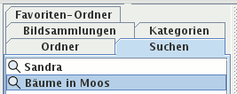
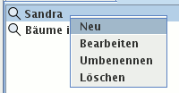

Im Kartenreiter Suchen sehen Sie Ihre gespeicherten Suchen. Eine gespeicherte Suche enthält stets die aktuellen Bilder mit bestimmten Eigenschaften, beispielsweise alle Bilder, auf denen Ihr Freund zu sehen ist.

Klicken Sie mit der linken Maustaste auf eine Suche, werden in der Mitte gefundene Vorschaubilder angezeigt. Die rechte Maustaste zeigt ein Kontextmenü mit verschiedenen Optionen wie das Umbenennen oder Bearbeiten einer Suche.
